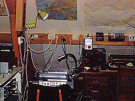
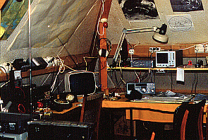
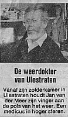

Als kind was ik al geobsedeerd door de apparaten (met diens geluiden) die in een donkere kamer op zolder stonden. Met daarbij nog een grote schotelantenne in de tuin kon hij de satellietfoto 'downloaden' en ontwikkelen. De achtergrond van deze website toont zo'n foto die op 14 november 1980 door een NOAA-weersatelliet is gemaakt. Mijn vader haalde met zijn hobby op 17 september 1988 zelfs de regionale krant (De Limburger). Met eveneens Jan als voornaam hadden we onze eigen (legendarische) weerman Pelleboer in Ulestraten!
Vandaag de dag ontvang ik de meteogegevens middels een API van weerlive.nl en verwerk ik ze in deze site.
De
creatieve uitdaging vind ik de 'droge
kost' aan informatie visueel te verwerken. Zo is de pijl na het achterhalen van de locatie ergens in
Nederland
in de opgegeven windrichting gedraaid en beweegt die vijf keer met een snelheid, afhankelijk van de
windkracht, in die richting.
Daarnaast wordt de achtergrondfoto donkerder getoond, zodra de zon is ondergegaan.
Negentien jaar na zijn dood (in 2001) houd ik op deze manier een mooie herinnering aan hem online.
  
{kind=link}